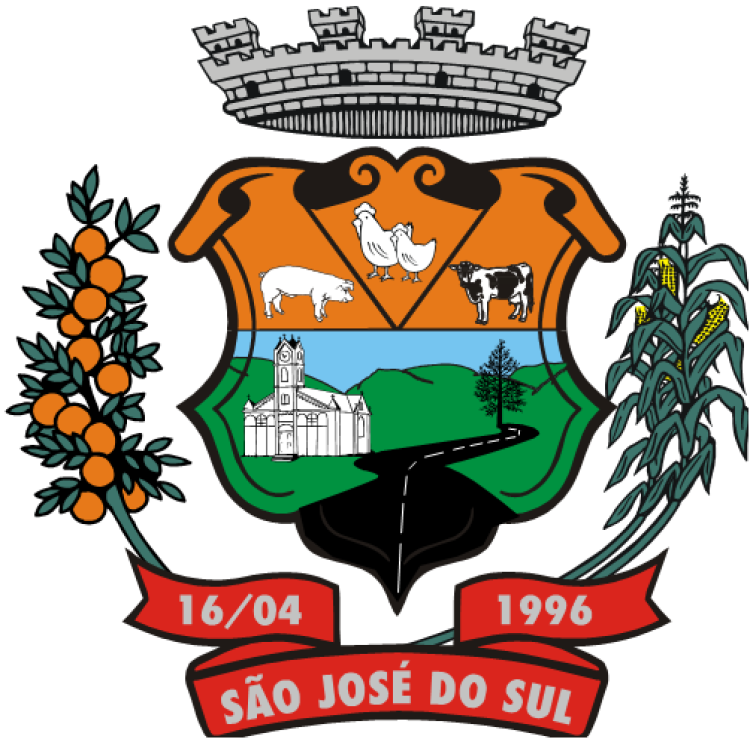

Município de São José do Sul
Painel Logístico
Central Operacional de Transportes--:--Última atualização: aguardando dados
Visão Geral do Dia
Resumo executivo da operação
Resumo operacional do dia
- Viagem principal
- VIA-SJS-0001
- Origem
- UBS / Centro de Saúde São José do Sul
- Destino
- Hospital Montenegro
- Motorista
- João Santos
- Veículo
- Van Saúde 01 - LOG-2045
- Status atual
- Programada
- Progresso
- 0%
- Última atualização
- Aguardando dados
Relatório rápido
- Total previsto
- 4 passageiros
- Embarcados
- 0
- Desembarcados
- 0
- Km simulados
- 42 km
- Tempo estimado
- 58 min
- Eventos recebidos
- 0
- Sincronizações
- 0
- Ocorrências
- 0
Viagens do dia
| Código | Horário | Origem | Destino | Motorista | Veículo | Passageiros | Status | Última atualização |
|---|---|---|---|---|---|---|---|---|
| VIA-SJS-0001 | 07:30 | UBS São José do Sul | Hospital Montenegro | João Santos | Van Saúde 01 | 4 | Programada | Aguardando |
Rastreamento GPS
UBS São José do Sul → Hospital Montenegro
Mapa real indisponível. Exibindo rota demonstrativa.
A simulação continua funcionando em modo local.
UBSSMS-01Hospital
Viagem em andamento
Progresso da viagem
UBS São José do Sul0%Hospital Montenegro
Status da viagemProgramada
Etapa atualAguardando início
Distância simulada42 km
Previsão de chegada58 min
Último GPSSem posição recebida
Motorista
Em viagemJoão SantosComunicação online
CNHVálida
Último GPSAguardando
ChecklistPendente
StatusEm viagem
Veículo
OperacionalModeloVan Saúde 01
PlacaLOG-2045
PrefixoSMS-01
Capacidade7 lugares
Ocupação0/7
Combustível78%
Km atual84.216 km
StatusAguardando despacho
Ocupação do veículo
0/7Capacidade7
Ocupados0
Livres7
Pacientes2
Acompanhantes2
Tabela de viagem ativa
VIA-SJS-0001CódigoVIA-SJS-0001
OrigemCentro de Saúde / UBS São José do Sul
DestinoHospital Montenegro
MotoristaJoão Santos
VeículoVan Saúde 01
Passageiros4
Status dinâmicoProgramada
Último GPS recebidoSem posição recebida
Pacientes e acompanhantes
0 embarcadosComunicação Base ↔ Motorista
OnlinePainel de despacho
EtapasSincronização
OnlineÚltima sincronizaçãoNão realizada
Eventos pendentes0
Fila de processamento0
Eventos recebidos hoje0
Checklist
PendenteStatus do sistema
Sistema OnlineServidorOnline
Banco de DadosAPI/Fallback
APIOperacional
GPSAguardando dados
SyncAtivo
Resumo da operação
Dados recebidosViagens concluídas0
Pacientes transportados0
Acompanhantes transportados0
Ocorrências0
Eventos recebidos0
Km simulados42 km
Tempo estimado58 min